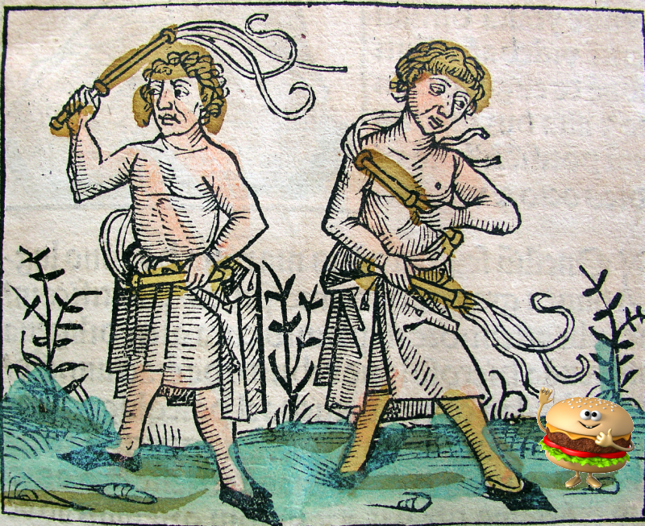

Everyday Systems: Podcast : Episode 70
Surgical Flogging
Hi, this is Reinhard from Everyday Systems.
Food logging: apparently it works. Some studies show that people who write down everything they eat are statistically, on average, at least a little more successful in their weight loss efforts than those who don’t – at least, for the relatively short periods of time these studies run. The problem? The relatively short periods of time these studies run. Food logging is not fun. It’s not something most people want to or can do long term. So they still fail. It gives an edge to some people, for a while, but not enough to most, long term.
Today I’m going to talk about a way you can practice a limited, strategic, surgical form of food logging with the No S Diet (or some other diet) that gives you the benefits of food logging – which are real, potentially at least – without the protracted and probably futile misery. I call it surgical flogging.
I’m sort of surprised that the term “flogging,” “food” + “logging,” doesn’t seem to be in use. It’s a more obvious portmanteau than “web” + “logging” = blogging, and unlike “blogging,” which doesn’t suggest anything in particular, “flogging” evokes a striking image, and what I at least think is a very suitable and appropriate image: a procession of medieval monks penitentially lashing themselves to ward off the plague – I think of that scene in Ingmar Bergman’s the Seventh Seal – that captures something essential about the activity itself.
Now maybe people don’t want such an image to be associated with food logging. If you’re pro-food logging you may prefer not to think of it as medieval torture. But I’m going to suggest that that aspect of it really is there, inherently, and that seeing that aspect, and accepting it, and having a sense of humor about it, can help you practice food logging successfully, in a limited way, for a limited time – even with the No S Diet, one of the pillars of which is not having to track stuff. We’re going to learn how to use the precisely the badness of food logging, the torture-iness of flogging in order to make it work to its full potential in the smallest possible doses.
So I’m going to use the terms “flog” and “flogging” today. I was thinking of going even further and call it “punitive flogging,” to double down on the medieval monks, to emphasize that the punishing pain aspect of it is key both in knowing how and when to deploy it, and understanding why it works at all. But I think “flogging” by itself captures that sufficiently, and “surgical” reminds us that, despite the fact that it’s a painful procedure, we’re doing this for a clean, sane, and rational end. It’s got to be very targeted and limited in order to be effective.
So why does flogging, of any kind, surgical or not, work?
Two reasons:
1) Simple awareness. When you write down everything you eat, you force yourself to become aware of how much you are eating (the No S Diet achieves already by shortcut with the three plates a day limitation of input opportunities that allows you to simple eyeball excess). That awareness, without any additional interventions, exerts a pressure all on its own. It may be, “oh, wow, I didn’t realize I ate that much.” Or it may also be “I sort of suspected I ate too much, but to see it all spelled out like that is embarrassing, even just to myself. I can’t pretend I don’t know anymore.” This aspect of flogging, the awareness aspect, is well known and appreciated. The other aspect is not – at least, as a benefit.
That other aspect is:
2) Pain. Precisely because flogging is unfun, it serves as a sort of speed bump of discomfort, because you know the cost of excess food is the potentially embarrassing (and certainly laborious) chore of having to write it down. In other words, flogging works because it is painful, and it makes you want to avoid activities that will require you to do it. You eat less because you want to write less, and confront less written evidence against you.
So awareness and pain. That is flogging. That’s why it works. And they are not unrelated. Part of the pain comes from the awareness.
Now I’m going to talk about how, in a limited way, for a limited time, surgically, you can effectively incorporate flogging into the No S Diet.
Why would you want to do this? I haven’t made it sound very appealing. And as I mentioned, the No S Diet already gives you a certain level of awareness of excess with the three plate rule, those three single plate meals a day, that force you to see what you are eating, and make any excess blindingly obvious. In fact, the sight of all that food inescapably in front of you, with nowhere to hide, might be more compelling than a mere written list, if you were just flogging. So on the awareness front, No S already has you covered to a good, and possibly sufficient degree. Why would you need more?
Well, for one thing, there are weekends, the infamous S-days, of course. The No S diet gives you Saturday, Sunday, and “special” days off. And over the years, people have worried a lot about the backsliding that can occur on those days. In time, successful No S Dieters find that their weekday habits and weekday sensitisation to excess will start to carry over into S-days, but others get discouraged and can’t hold out long enough to make that discovery. So that’s one area where flogging could help boost awareness and that gentle pressure that awareness brings.
And it could help even during the week, if you’re worried that your visual sense of excess is not quite sufficient, or not yet calibrated quite correctly. In other words, that piled high plate that would shock your friends and neighbors still looks just fine to you. In that case, writing down what you are eating as well as visually confronting excess could be a form of “good redundancy” like I talked about in an episode last. Yes, you could get away with one or the other, eyeballing or flogging, but doing both gives you a backup, and each method will catch some things the other misses. That’s another way flogging could help simply on the awareness level.
But I think where it really has potential is on the pain level, as a motivational tool.
Remember: flogging is awareness and pain.
Don’t worry: the pain is minimal (at least in my protocol). It’s the minimum effective dose.
Here are the mechanics of it:
First off, I’d just like to point out that the No S Diet structurally makes flogging easier than other diets. There are fewer “input opportunities” to monitor, just three meals every weekday, so there is less to write down. And it’s a nice feedback loop, a virtuous circle. If you’re good about the No S Diet, if you stick with your three single plate meals a day, there is less to flog. And if you are vigilant about flogging, you will be less likely to wander beyond your No S Diet three plates because now a double shock of pain and failure awaits you at that boundary.
I call the mechanism of flogging with No S Diet, BLD logging, (which also sounds vaguely sadomasochistic), B for breakfast, L for Lunch, D for diner. When I’m practicing it, on my daily index card, or wherever you prefer to track stuff, I write a B colon, L colon, and D colon to fill in over the course of my day. Inter-meal eating, should it occur, has to be jammed between these. These, and anything that’s an “S” violation (snacks, sweets, seconds) I mark with an asterisk to call additional attention to it.
I only write the most minimal description of what I ate. I don’t try to look up calories or carbs or whatever, or measure portion sizes. This is very rough, limited effort, low calorie food logging, right? Low calorie in the sense that it’s not a lot of work. The point isn’t full descriptive accuracy. The point is to get a “good enough” sense for awareness, and to get a pain signal but not too great a pain signal.
You might be wondering. What do I want a pain signal at all? Well one, because, as I mentioned the pain signal is why flogging works at all. It’s building a pavlovian operant conditioning response between the stimulus of you putting the food in your mouth and the pain of having to write it down. Logging your food is not just a witnessing, a passive recording, but an act of discouragement.
But also, and this is where the “surgical” comes in: we aren’t flogging forever. We are flogging for a limited time, within tightly prescribed parameters. The pain signal is important because you want to be looking forward to not having to flog anymore. And then, once you’re not flogging, you want to remember the pain as an incentive to not have to start flogging again.
You don’t want too great a pain signal, or you’ll stop prematurely. And well, that’s just messed up. This is not about actually enjoying pain.
So here we come to the interesting part: with surgical flogging, when do you start, and when do you stop? What are the triggers for each of these?
What I would suggest is, don’t flog at all if everything is going fine. If you don’t need it, all the better. But don’t stop listening to this episode even in that case, because even then, the idea of flogging can be useful, the knowledge that should you need something extra some day, the technique of surgical flogging is available to you. That knowledge can be a comfort, that you’ve got backup, should you need it – and perhaps even more importantly, it can be a deterrent to keep you in line, right? If you don’t continue to stick with No S successfully, those self-flagellating monks are gonna come and get you.
If everything is not going fine, if you are frustrated on No S, if you are genuinely baffled as to how excess is creeping in, if you notice that there are certain times of the year where some additional systematic support could come in handy, say around holidays or vacations, that’s when the practice of time-limited flogging can be a help.
I’m going to discuss several possible triggers, starting with what I do myself but do NOT actually recommend to most people, because I think many of you will have a hard time with it if you haven’t been maintaining healthy weight and eating habits for many years as I now have been. So don’t get freaked out about this scale talk up front – I have other, non-scale triggers that I’ll describe right after which I think will be more appropriate for people who are just starting with No S, or are really struggling with it, or have a complicated emotional relationship with the scale.
So, the scale way: The way I’ve practiced it myself is I’ve got two triggers. I like to say my weight is 170 pounds. This is the weight I’ve been quoting since I first lost 40+ pounds on the No S Diet 20 years ago. But I know, since I’ve been weighing myself daily now for many years, that it can jump around quite a bit, and though much of that is random, some of it is not. Vacations and holiday clusters in particular I can jump 10 pounds. It’s not a crisis. I get back eventually. But I’ve found, through experimenting, that I get back faster if a do a little flogging. And that the specter of flogging also makes those vacation and holiday periods less excessive to begin with, so there is less to recover from.
My personal trigger to start flogging is if I see a weekly average of over 173 pounds on the scale. I weigh daily on my fitbit connected smart scale, so it’s easy to see when this happens.
Then I flog for a full week. If at the end of that week, my average is under my threshold (173 pounds), I can stop. Almost always, a single week is all it takes, but sometimes it’s taken two, even three. And then, once I’m under again, I can stop flogging. And I almost always am able to stay under the trigger threshold until the next big vacation or holiday cluster, which I don’t have so many of, so much of the year. The knowledge that I will have to start flogging again if I go over this threshold is motivationally helpful even when I am not flogging. I’d go so far as to say that the non-practice of flogging is even more important than the practice of it – that flogging does its greatest good when it’s just lurking in the background, inactive, but poised to reawaken at a specific call, the specter of flogging. If you’re flogging right, periods of active flogging should be very rare, a few weeks in the year, maybe.
The trick, in choosing your thresholds, is to choose something realistic. Something you’re not going to trigger all the time, and something you really could bounce back from in a week or two. And then with some buffer so you’re not constantly immediately re-triggering after. This is probably the hardest part about surgical flogging. I would recommend erring on the side of too lenient rather than too ambitious. If you’re flogging more than three weeks consecutively, a month certainly, you haven’t chosen your thresholds right. Don’t despair if that is the case – just reassess then, and reset your numbers to something more appropriate.
It’s OK if these numbers change over time, this threshold. I only flog for maintenance. I’ve been doing No S for years and I know from thousands of measurements at this point, what my weight should be, and what my normal random fluctuation is. So it’s easy for me to have my 173 and that’s that. But if you’re new to No S, and far from where you want to be, it’s going to be hard to come up with a number like that.
So what I’d recommend to most people is not to use the scale at all for your threshold.
What I would recommend to someone just starting, or to someone who knows they are going to have trouble finding a realistic number, or has too many emotions bound up with the scale to make weight the trigger at all, is to choose something else for your flogging threshold, another metric, not a number on the scale but rather my favorite metric for No S or any other habit: compliance, days on habit.
Something like: your trigger to start flogging is 2 fails or red days in a week. At the end of the week if you’ve seen that has happened, resolve to flog for at least one more week, or until your success rate is above that. Then stop. It might take just one week. It might take two. If it takes more than three, re-assess. Maybe your threshold needs to be 3 or more red days instead. You can always set your thresholds lower again once you are comfortably cruising at that better compliance rate. When your compliance gets better, set the flogging threshold to just one day: one fail is the trigger to flog the next solid week.
Another idea might be to just flog on S days, if you think S days are really your problem. Or just on “upper case S days” as I sometimes call them: major holidays, vacations, when overeating is most likely to make it past your No S Diet defenses.
How might this work, in terms of start and stop thresholds? The trigger could simply be: I am worried about my S-days. They feel too excessive. You could say, this calendar month, I’m going to flog all S days. That should be enough to gain some awareness, to set up a healthy respect for the pain involved in flogging, and maybe to reset your sense of normalcy for what S-day eating should be like. Give yourself the next month off. If you feel like the month after you could use another month of S-day BLD logging, re-commence.
Another idea might be something more impressionistic – but still, within articulated parameters. This could help if you have a high compliance rate with No S, but are still not getting the results you would like, and you think it’s not about the S days. Every month, on the first of the month, see how you are doing. If your compliance was good, but you are still not happy with how you are doing on No S, if you feel it isn’t helping enough in moderating your eating, flog for a week. Just one week. Then reassess again at the beginning of the next month. No improvement? Flog for two weeks. Reassess at the end of the month. Etc.
There are many possible approaches, many possible combinations even, you could combine the S day approach with a scale weight threshold, or a compliance level threshold. You could flog just esses – just snacks, sweets and seconds – and reward yourself for sticking with single plate meals by not having to flog them. I encourage you to experiment. It may take some trial and error before you get the ideal mechanics for you in your current situation.
Whatever your triggers are, and whether you’re flogging N and S days or just S-days, all food or just esses, what I would not recommend is flogging forever, even if you think that you are tough enough to bear it. I suspect it would be hubris, that you’d give up after a while, that it would be unpleasant, and more than is necessary. Unnecessary pain is not good. Conditioning yourself to always feel some level of pain with every bite of food you put in your mouth doesn’t seem healthy to me. But there’s another, too: I’ve mentioned it already, but it bears repeating, not flogging is just as important a reason that flogging works as actively flogging. The dread of flogging, the specter of flogging, is as powerful as flogging itself. And if you’re always flogging, you lose the benefit of that dread.
Surgical flogging has its yin and its yang, the doing and the not doing, you can’t be all yang, all doing.
So now you know when to flog, and what to flog, but how do you flog? With pen and paper? In a spreadsheet? Using an app?
The only flogging I have ever done is pen and paper, or rather, pen and index card – with a brief period when I transferred it to my life log spreadsheet, which I found did not yield much if any additional benefit, and the amount of labor involved tipped it into cruel and unusual punishment territory. It was total overkill.
I am aware that there are a bazillion apps out there for food logging and dietary tracking: Noom is a popular one, and I have some sense of how these work from looking over people’s shoulders. What I’ve gathered is that they do not actually make the core act of flogging any easier. They look up all kinds of calorie and carb counts for you, and somewhat arbitrarily give foods color-coded rankings, but they don’t seem to save any time in terms of inputting food. So sure, you could do surgical flogging with noom or one of these other tools if you like, but I’m not sure they give much extra benefit. The main benefit of flogging is simply the act of writing it down, the speed bump of awareness and pain. And I almost think that works better with good old fashioned pencil and paper (or pen and index card). This isn’t the “quantified self.” The act of writing it down is more important than the “data” you accumulate. Even if you were to never look at it again, even if you were to tear it up immediately after you wrote it, the exercise of writing it down would give you most if not all of the benefits. Think of those Swedish monks. They wouldn’t have whipped themselves with an app.
The idea of surgical flogging is not totally new, as far as Everyday Systems goes.There is some precedent. I discussed a conceptually similar technique in one of my earliest episodes: negative tracking. The idea behind negative tracking is that all tracking of any kind, even minimalist habitcal style “compliance” tracking is painful, and that the pain of that tracking can be motivationally useful if carefully applied, in other words, if being good means you get to track less. Surgical flogging is really just a “special case” of negative tracking. I encourage you to check out that older episode as well if what I’ve been talking about today resonates at all with you.
Some people might be put off by the punitive aspect of surgical flogging and the negativity of negative tracking: it’s not the self-affirming positivity we feel should be relentlessly exuding these days. But I propose that it’s something better than self-affirming: it’s self-accepting. It accepts that we are, in our core, critical, of others, of ourselves. It isn’t the only thing we are, but that’s a real, undeniable part of us. And given that, we can either pretend that this is not the case, that we don’t have this unattractive complex of emotions swirling around inside our subconscious, and try to wish it away with unconvincing positive self-talk, or we can try to harness that self-critical impulse constructively, in a carefully controlled way, so that it helps us rather than damages us. After all, food logging is not exactly a torture instrument, a cat-o-nine-tails. It’s not even overtly critical, it’s just recording some facts. I give it this over-the-top name “flogging,” and this image with the medieval monks, 1) so that you recognize the critical aspect even of this relatively innocuous act of recording, so you’re not fooling yourself about that but also 2) so you can simultaneously laugh at it, to see the smallness and silliness of it, to take just enough of the edge off. A very subtle application of the everyday systems principle of comic pragmatism.
And flogging is so much better than some of the other implements of torture you might have reached for to punish yourself for not doing as well on the No S Diet as you’d hoped – a highly restrictive calorie or carb accounting diet. Now that’s torture. And nothing funny about it.
I also feel like, stylistically at least, you could view surgical flogging as part of this larger trend of abandoned disgusting and/or painful “medieval” medical practices that are making a comeback, this time with science on their side: leeches, maggots for wound cleaning, and even acupuncture, which is now so accepted that no one even questions it anymore.
Because this has been a long and rambling episode already, I’d like to quickly recap in three points to make sure the essentials don’t escape you:
Flogging works because of awareness and pain.
But it’s not going to work long term, because of that pain. So you have to be surgical, and that means carefully defined thresholds for when you start and when you stop. It may take you some trial and error to get these thresholds right.
Not flogging, the dread of flogging, is just as important as actively flogging – maybe even more so. A successful surgical flogger will spend most of his time not flogging.
Is surgical flogging necessary for all No essers? Absolutely not. It took me almost 20 years to even think of it. But it's a tool in your arsenal to be aware of. Another potential layer of “good redundancy” to work with your existing No S Habits rather than against them.
That’s all for today, thanks for listening.
© 2002-2022 Everyday Systems LLC, All Rights Reserved.